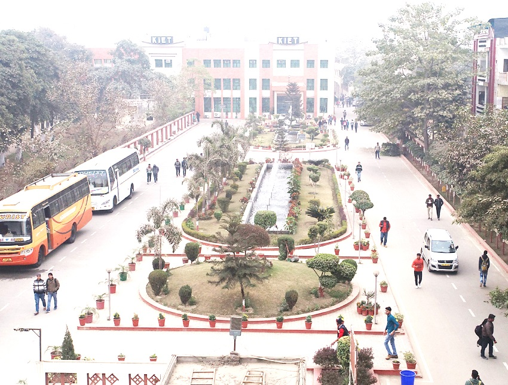

About The Conference
Department of Information Technology, KIET Group of Institutions, Ghaziabad, India in association with IEEE UP Section is organizing 3rd International Conference on Issues and Challenges in Intelligent Computing Techniques (ICICT-2022) on November 11-12, 2022. ICICT-2022 is technically co-sponsored by IEEE UP Section and IEEE USA. All accepted and presented papers will be submitted to IEEE for inclusion in IEEE Xplore Digital Library. The main objective of the Conference is to stimulate and facilitate active exchange, interaction and comparison of approaches, methods and ideas related to specific topics, both theoretical and applied, in the general areas related to the Intelligent Computing, Communication, intelligent techniques, computing technologies, Software Engineering and other contemporary issues like High Performance Computing, Distributed Computing and Grid Computing to foster the exchange of concepts and ideas.
The main aim of this International Conference is to contribute to academic arena, business world, and industrial community and in turn to the society. Targeted audience of this conference would be representatives from Academia, Industry and Government Organizations who are involved or have interest in Computing Technologies and its Applications. Overall the conference will provide the researchers and attendees with prospects for national and international collaboration and networking among universities and institutions from India and Abroad for promoting research.
Important Dates
-
September 30, 2022
Deadline for Manuscript Submission
-
October 21, 2022
Notification of Acceptance / Rejection
-
October 28, 2022
Submission of Camera Ready Papers
-
October 28, 2022
Registration Deadline
-
November 11 - 12, 2022
Conference Dates
Our Speakers
Keynote Speakers ICICT 2022
Dr. Gaurav Gupta
Additional Director / Scientist 'E' @ Cyber Laws & E-Security, Ministry of Electronics and Information Technology, Government of IndiaMr. Bohitesh Misra
Co-Founder and Chief Technology Officer with connected Healthcare Analytics PlatformDr. Grace Eden
IIIT Delhi

Dr. N.R. Pal
ISI Kolkata
Dr. Gaurav Gupta
Additional Director / Scientist 'E' @ Cyber Laws & E-Security, Ministry of Electronics and Information Technology, Government of IndiaMr. Bohitesh Misra
Co-Founder and Chief Technology Officer with connected Healthcare Analytics PlatformDr. Grace Eden
IIIT Delhi
Dr. N.R. Pal
ISI KolkataVENUE
KIET Group of Institutions
13-Km Stone,Ghaziabad-Meerut Road, Ghaziabad-201206
A Brief for Sponsors
This conference aims to gather professors, researchers, scholars, and industrial pioneers all over the world. ICICT-2022 is the platform for the presentation and exchange of past experiences and new advances and research results in the field of theoretical and industrial experience in the Intelligent Computing, Communication and Emerging Technologies domain. The conference welcomes contributions that promote the exchange of ideas and rational discourse between educators and researchers all over the world. We aim to build an idea-trading platform for the purpose of encouraging researchers to participate in this event. It is welcomed that if you want to sponsor or establish partnerships with the organization of ICICT-2022.
ABOUT KIET
KIET Group of Institutions is recognized as one of the best engineering colleges in Delhi-NCR. Founded by the members of Krishna Charitable Society in 1998 with a modest number of 180 students, KIET Group of Institutions has now become a pioneer in the technical education domain with a strength of 6500+ students.
With a rich alumni base of 16000 + students spread in all the nooks and corners of the world, KIET Group of Institutions is moving efficiently towards its vision of shaping young minds with skill-oriented & value based education as these alumni serve the dual purpose of mentoring the present students, as well as opening new doors for them.
The institute has gained a distinct image as an outstanding educational colossal among the technical institutions of Uttar Pradesh, due to its inclination towards innovative and skill-based education. Its consistent belief in 'Achieving High' is aptly reflected in its academics, extracurricular activities and placements. The success of its belief is clearly brought out in the plethora of Education Excellence Awards bagged by the institute. The institute has been accredited by NAAC with Grade 'A+' and its programmes (CSE, ECE, EEE, IT, ME, MCA and Pharmacy) are NBA accredited.
KIET Group of Institutions, Delhi-NCR, Ghaziabad (UP) is recognized by the Scientific and Industrial Research Organisations (SIROs). NIRF ranks KIET among the “Top 250” in India (overall category)-2020.
The institute is accredited by National Assessment and Accreditation Council (NAAC) with Grade 'A' for 5 years and certified by ISO 9001-2008. KIET has been awarded “Excellence Award” by our parent University, Dr. A.P.J. Abdul Kalam Technical University for imparting quality education. KIET has repeatedly earned a vital position in the Overall Rank Band of 151-200 for Engineering discipline amongst 906 Engineering Institutions in 2018 and among 1007 Engineering Institutions in 2017 by National Institutional Ranking Framework (NIRF) - India Ranking by MHRD, Govt. of India.
KIET is an approved Research Centre of Dr. A.P.J. Abdul Kalam Technical University with unique global standards of teaching learning experience, Research & Development, quality placement and Entrepreneurship.